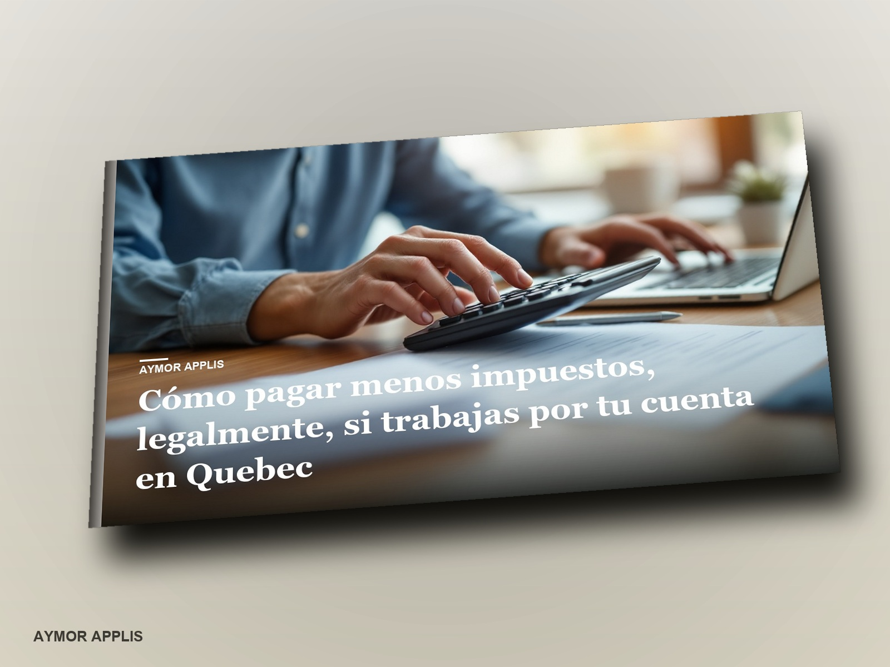
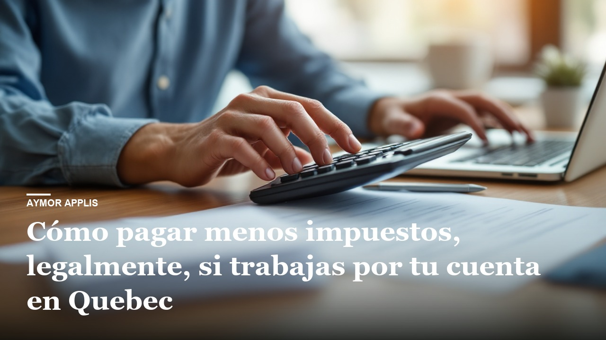

What gets decided before December 31 and what can still be decided up to March 1. RRSP, TFSA, FHSA, labour-sponsored funds, children, spouse, business expenses, GST and QST, incorporating or not, and the credits people leave on the table. With the 2026 figures, how much each move saves you depending on what you earn, and a plan by profile.
The book is in English, Spanish, French.
For people who work for themselves in Quebec and want to know what to move and when, with 2026 figures. It is not a tax-evasion manual and not personalized tax advice, and it does not replace your accountant in special situations.
27.99 USD One payment. Does not renew.
If you buy for your business, consumer protection laws do not apply. Only tick it if it is true.
BuyTick the box to be able to pay.
The button turns on when the owner opens the store.